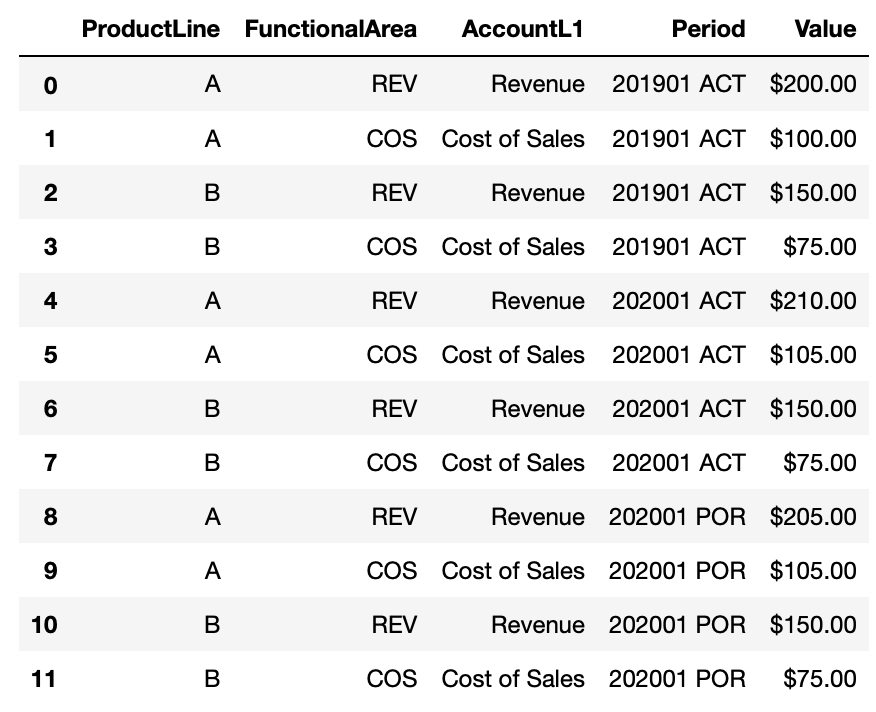

This code creates a practice dataframe for instruction in a format that is familiar with finance analysts. Analysts typically deal with profit and loss statement data in excel spreadsheets, often pulled or aggregated from an ERP source system and this example shows a toy example that has some relevant fields and formatting.
import pandas as pd
# For convenience while using a Jupyter Notebook,
# display dataframe floats as currency & round to two decimal places
pd.options.display.float_format = '${:,.2f}'.format
def make_pnl():
df = pd.DataFrame(data={'ProductLine': ['A', 'A', 'B', 'B'],
'FunctionalArea': ['REV', 'COS']*2,
'AccountL1': ['Revenue', 'Cost of Sales']*2,
'201901 ACT': [200., 100., 150., 75.],
'202001 ACT': [210., 105., 150., 75.],
'202001 POR': [205., 105., 150., 75.]
})
return df
df = make_pnl()
This is a very simplified version of the data that would be familiar to analysts. In reality, there would be many more fields and values, depending on the level of granularity that’s available. The columns like ‘201901 ACT’ are time periods in a YYYYQQ format and the last three letters signify whether it is an actual or forecast (POR or Plan of Record) value.
Multi-Index DataFrame Slicing
It might also be useful to make this a multiindex dataframe for easier grouping/slicing and to reduce the amount of space the dataframe takes up in memory.
df.set_index(['ProductLine', 'FunctionalArea', 'AccountL1'], inplace=True)
You may need to use sets to slice among items in your index. Use slice(None) to skip levels in your index if needed.
df.loc[('A', slice(None), 'Cost of Sales')]and returns: 
Which is the same as using the query() method:
df.query("ProductLine=='A' & AccountL1=='Cost of Sales'")Converting from Wide to Long format with pd.melt()
Another useful transformation is to ‘unpivot’ the data with pd.melt().
id_vars = ['ProductLine', 'FunctionalArea', 'AccountL1']
dfl= df.reset_index().melt(id_vars=id_vars, var_name='Period', value_name='Value')
Join Previous Cycle for Recons
You’ll often need to reconcile PnL data against other time periods, like prior quarters, prior years, actuals vs forecasts, and so on.
In a spreadsheet you’d manually manipulate and select columns and subsets of data to perform this. In Python, you can perform a SQL-style lookup and join so that you create those reconciliations in a table of data that you can slice and lookup later.
id_vars = ['ProductLine', 'FunctionalArea', 'AccountL1']
# Pull in data in long format
dfl = df.reset_index().melt(id_vars=id_vars, var_name='Period', value_name='Value')
# Create new features by parsing text
dfl['YYYY'] = dfl['Period'].apply(lambda x: x[:4]).astype(int)
dfl['Q'] = dfl['Period'].apply(lambda x: x[5]).astype(int)
# Use new features to calculate lookup columns
dfl['Prior_Year_Period'] = ((dfl['YYYY'] - 1) *100 + dfl['Q']).astype(str) + " ACT"
# Create a subset to use as the right dataframe
df2 = dfl[id_vars + ['Period', 'Value']].rename({'Value': 'PY_Value'}, axis=1)
# Left Join the original dataframe with the right dataframe
dfNew = dfl.merge(df2,
left_on=id_vars+['Prior_Year_Period'],
right_on=id_vars+['Period'],
how='left',
suffixes=["", "_DROP"])
# Drop duplicate columns
dfNew.drop(dfNew.filter(regex='_DROP$').columns.tolist(),axis=1, inplace=True)And we see the result works. In this example, we don’t have 201801 ACT data so it’s a np.nan value, but you see the rest of the values filled in as expected for prior year values.